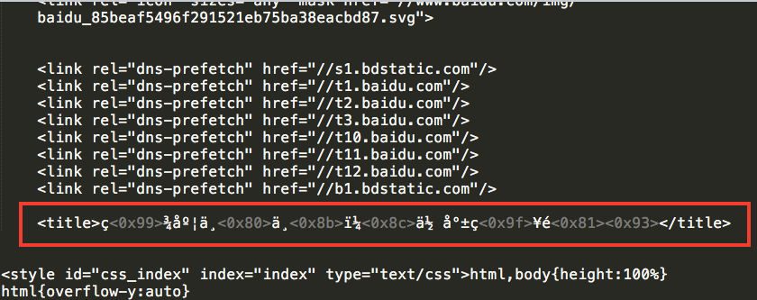
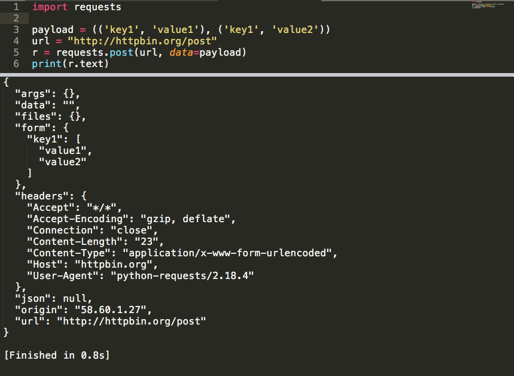
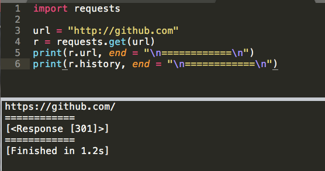

A Web crawler, sometimes called a spider or spiderbot and often shortened to crawler, is an Internet bot that systematically browses the World Wide Web, typically for the purpose of Web indexing (web spidering). —— From Wiki
网络爬虫，是一种按照一定规则，自动地抓取网络中特定信息的程序或脚本。
往大了说，像百度、谷歌这样的搜索引擎，其实质就是爬虫；往小了说，用Python脚本获取百度首页的html文档，也算作爬虫。因此，广义上讲，将Web作为数据源进行信息采集工作的程序，都可以称之为“爬虫”。
无论是大型搜索引擎还是小型网络爬虫，其最基本且必备的功能是——根据URL下载网页。下载网页的实质是，向服务器发送HTTP请求，客户端获取响应。因此，使用Python编写网络，实质就是使用Python发送HTTP请求。
官方文档对于Requests库的基本描述：Requests允许你发送纯天然，植物饲养的 HTTP/1.1 请求，无需手工劳动。
例：使用requests对百度首页发起HTTP请求，获得百度首页的html文档：
1234567891011
import requests
url = "https://www.baidu.com/"
res = requests.get(url) # GET请求，返回Response对象
print(res.url) # 任何重定向后获得的最终url
print(res.status_code) # 状态码
print(res.encoding) # 编码方式
print(res.text) # 响应实体
res.encoding = "utf-8" # 重新设置编码方式
print(res.text) # 不再是乱码
requests库是第三方库，因此需要手动安装。
pip3 install requests
使用requests的get方法发送GET请求：
1234
import requests
url = "http://httpbin.org/get"
r = requests.get(url)
get方法返回一个Response对象，即请求对应的响应。这个Response对象包含着我们所想要的一切信息，不只包括——响应状态码，响应头信息，响应实体……
想要发送其他类型的请求？只需把get方法换成对应类型的方法即可，如下：
1234
r = requests.put('http://httpbin.org/put', data = {'key':'value'})
r = requests.delete('http://httpbin.org/delete')
r = requests.head('http://httpbin.org/get')
r = requests.options('http://httpbin.org/get')
一个url的查询字符串(query string)就是url中?后面的一个个以&间隔的键值对。例如http://httpbin.org/get?name=sam&age=20中name=sam&age=20就是其查询字符串。
查询字符串是通过url向服务器传递信息的一种方式。如果你想传递key1=value1和key2=value2到http://httpbin.org/get，那么必须构造http://httpbin.org/get?key1=value1&key2=value2，并访问之。
除了手动构造外，requests提供params关键字参数，以一个字符串字典来提供这些参数。如下：
12
payload = {'key1': 'value1', 'key2': 'value2'}
r = requests.get("http://httpbin.org/get", params=payload)
print(r.url)后会发现打印出http://httpbin.org/get?key2=value2&key1=value1，说明通过params参数，查询字符串被构造并纳入raw url中。
注意，字典里值为None的键都不会被添加到url的查询字符串里。
传递一个dict给headers参数即可。下例中，在GET请求的头部增添了User-Agent字段：
1234567
import requests
url = "http://httpbin.org/get"
headers = {
'User-Agent':'Mozilla/5.0 (Macintosh; Intel Mac OS X 10\_12\_6) AppleWebKit/537.36 (KHTML, like Gecko) Chrome/70.0.3538.102 Safari/537.36'
}
r = requests.get(url, headers = headers)
注意：
string、bytestring或者unicode。访问Response的status_code属性即可得到状态码，类型是int。
12345678910
import requests
url = "http://httpbin.org/get"
headers = {
'User-Agent':'Mozilla/5.0 (Macintosh; Intel Mac OS X 10\_12\_6) AppleWebKit/537.36 (KHTML, like Gecko) Chrome/70.0.3538.102 Safari/537.36'
}
r = requests.get(url, headers = headers)
# 状态码，int类型
print(r.status_code)
一般都希望返回200。
访问Response的headers属性即可得到响应头信息，类型十分类似于dict。
123456789101112
import requests
url = "http://httpbin.org/get"
headers = {
'User-Agent':'Mozilla/5.0 (Macintosh; Intel Mac OS X 10\_12\_6) AppleWebKit/537.36 (KHTML, like Gecko) Chrome/70.0.3538.102 Safari/537.36'
}
r = requests.get(url, headers = headers)
# 状态码，int类型
print(r.status_code, end = '\n==========\n')
# 响应头信息
print(r.headers, end = '\n==========\n')
可以使用[]或get()来获取具体字段的值，例如：r.headers['Content-Type']和r.headers.get('Content-Type')等价，将返回响应头中Content-Type字段的值。
但是严格来讲，r.headers不是dict，因为它对大小写不敏感——可以使用任意大写形式来访问这些响应头字段，即r.headers['Content-Type']和r.headers['content-type']没差。
大多数情况下，我们向服务器端请求的是像html文档这样的文本内容，访问Response对象的text属性，便可以得到服务器端返回的文本型响应实体。如下：
123456789
import requests
url = "http://httpbin.org/get"
headers = {
'User-Agent':'Mozilla/5.0 (Macintosh; Intel Mac OS X 10\_12\_6) AppleWebKit/537.36 (KHTML, like Gecko) Chrome/70.0.3538.102 Safari/537.36'
}
r = requests.get(url, headers = headers)
text = r.text
print(text)
关于编码
请求发出后，Requests 会基于 HTTP 头部对响应的编码作出有根据的推测。当你访问r.text之时，Requests 会使用其推测的文本编码。你可以找出 Requests 使用了什么编码，并且能够使用r.encoding属性来改变它。
例如，获取百度首页的html，如果不改变r.encoding，打印r.text会看到乱码：

这是因为Requests推测文本编码为ISO-8859-1(可以使用print(r.encoding)查看)，然后就用ISO-8859-1解码；但是该html文档并不是用ISO-8859-1编码的，而是用utf-8：
所以在print(r.text)前，要改变一下编码，使用r.encoding='utf-8'即可。
对于二进制响应内容，Requests提供以字节的方式访问请求响应体。对于非文本请求，如下载图片、mp3音乐等，访问Response的content属性，获取二进制响应内容，然后写入对应格式文件中即可。
例如，使用Requests下载下图中左上角的图片：

首先拿到图片的地址，为https://requests-docs-cn.readthedocs.io/zh_CN/latest/_static/requests-sidebar.png，编写代码：
12345678
import requests
url = "https://requests-docs-cn.readthedocs.io/zh_CN/latest/_static/requests-sidebar.png"
r = requests.get(url)
content = r.content
with open('pic1.png','wb') as f:
f.write(content)
运行后稍等一会儿，你的python脚本旁边就会出现一个png图片。
123456789101112131415
{
"args": {},
"headers": {
"Accept": "text/html,application/xhtml+xml,application/xml;q=0.9,image/webp,image/apng,*/*;q=0.8",
"Accept-Encoding": "gzip, deflate",
"Accept-Language": "zh-CN,zh;q=0.9",
"Cache-Control": "max-age=0",
"Connection": "close",
"Host": "httpbin.org",
"Upgrade-Insecure-Requests": "1",
"User-Agent": "Mozilla/5.0 (Macintosh; Intel Mac OS X 10\_12\_6) AppleWebKit/537.36 (KHTML, like Gecko) Chrome/70.0.3538.102 Safari/537.36"
},
"origin": "58.60.1.27",
"url": "http://httpbin.org/get"
}
json全称为JavaScript Object Notation，是一种格式，用于存储和交换文本信息，广泛用于网络传输。
json使用JS语言的语法来描述数据对象，但其写入和读取与语言和平台无关。
简单理解，json很像python中的字典。
因此，对于为json格式字符串的响应实体，可以使用python的json标准库来将其解析为字典，然后进行操作。但是Requests贴心地为用户提供了一个内置的json解码器，让你不用import json——只需调用Response对象的json()方法：
12345678
import requests
url = "http://httpbin.org/get"
r = requests.get(url)
data = r.json()
print(type(data)) # 类型是dict
print(data)
当然，如果返回的响应实体不是json格式的字符串，自然无法用json解析器解析，此时r.json()会抛出异常。
POST表单(form)形式的数据，只需简单地传递一个字典给post方法data参数，这个字典在请求发出时，自动被编码为form的形式：
123456
import requests
payload = {'key1': 'value1', 'key2': 'value2'}
url = "http://httpbin.org/post"
r = requests.post(url, data=payload)
print(r.text)
可以为data传入一个由元组构成的列表——在form中多个元素使用同一key的时候，这种方式尤其有效：
123456
import requests
payload = (('key1', 'value1'), ('key1', 'value2'))
url = "http://httpbin.org/post"
r = requests.post(url, data=payload)
print(r.text)

又有些时候，你并不想发送编码为表单形式的数据，例如传递json格式的字符串即可，即传递一个string而不是一个dict，可以r = requests.post(url, data=json.dumps(payload))，或者直接r = requests.post(url, json=payload)
默认情况下，requests会自动处理GET、POST方法的所有重定向(redirect)，即页面自动跳转，返回最终的Response对象。
可以使用响应对象的history方法来追踪重定向：
123456
import requests
url = "http://github.com"
r = requests.get(url)
print(r.url, end = "\n============\n")
print(r.history, end = "\n============\n")

上图中，我们明明访问的是http://github.com，但通过r.url，我们发现返回的是https://github.com(多了一个s)，这说明在请求过程中发生了重定向，“页面”自动由http://github.com跳转到了https://github.com。通过r.history看到，确实发生了301重定向。
Response.history是一个Response对象的列表，为了完成请求而创建了这些对象。这个对象列表按照从最老到最近的请求进行排序。
对于GET与POST请求，可以通过allow_redirects参数禁用重定向处理，即设置allow_redirects=False，如：r = requests.get('http://github.com', allow_redirects=False)。
设置timeout参数，告诉requests经过多少秒后停止等待响应；若超时，会抛出异常：
123456
import requests
url = "http://github.com"
r = requests.get(url, timeout = 0.01)
print(r.status_code)

回顾一下Cookie：
想要在你的请求中加入cookies，只需使用cookies参数，传入字典：
1234567
import requests
url = "http://httpbin.org/cookies"
cookies = {'name':'Serena'}
r = requests.get(url, cookies = cookies)
print(r.text)
访问Response对象的cookies属性，是截获服务器的set-cookies，而不是获取发送请求时附带的cookies，这一点不能混淆。
r.cookies返回RequestsCookieJar对象，其功能和行为与字典及其类似，可以[]也可以get()，使用dict(r.cookies)可以将其转化为真正的字典。
RequestsCookieJar对象的接口更为完整，适合跨域名跨路径使用。你还可以把CookieJar传到Requests中：
1234567
jar = requests.cookies.RequestsCookieJar()
jar.set('tasty_cookie', 'yum', domain='httpbin.org', path='/cookies')
jar.set('gross_cookie', 'blech', domain='httpbin.org', path='/elsewhere')
url = 'http://httpbin.org/cookies'
r = requests.get(url, cookies=jar)
r.text
# '{"cookies": {"tasty_cookie": "yum"}}'
使用场景：利用requests.post()登录了某个网站后，第二次想获取成功登录后的自己的个人信息，再次使用requests.get()——Nope，这相当于打开了两个完全不相干的对话，第二次的请求无法记住第一次的状态；要想记住第一次的状态，就必须维持这段“会话”，使用Session解决。
会话对象 (Session) 让你能够跨请求保持某些参数。它也会在同一个 Session 实例发出的所有请求之间保持 cookie。
实例：
123456789
import requests
s = requests.Session()
s.get('http://httpbin.org/cookies/set/sessioncookie/123456789')
r = s.get("http://httpbin.org/cookies")
print(r.text)
# '{"cookies": {"sessioncookie": "123456789"}}'
使用Session可以做到模拟同一个会话，且不用担心Cookie问题——通常模拟登录成功之后再进行下一步的操作。
requests提供证书验证功能：当一个请求是https请求时，会自动检查SSL证书，使用verify参数，默认是True——自动验证。
验证证书可能带来的问题——在请求时出现错误SSLError，certificate verify failed，即证书验证错误。
可以在get()方法中将参数verify设置为False，这样就不会验证证书，就不会出错，但是可能会收到Warning。使用以下代码可以忽略警告：
123
from requests.packages import urllib3
urllib.disable_warnings()
By DraymondG